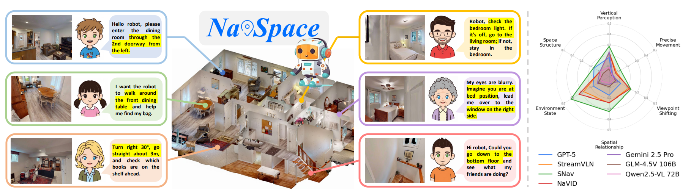

|
Haolin Yang (杨昊霖) I am a third-year undergraduate student at Peking University, majoring in Intelligence Science and Technology at the School of Intelligence Science and Technology. My research focuses on Embodied Intelligence and Multimodal Comprehension. I am particularly interested in Vision-Language Navigation, Spatial Intelligence, and Multimodal Learning. |

|
News2025-09 Submitted NavSpace: How Navigation Agents Follow Spatial Intelligent Instructions to ICRA 2026! |
ResearchI'm interested in embodied AI, vision-language navigation, spatial intelligence, and multimodal learning. |
|

|
NavSpace: How Navigation Agents Follow Spatial Intelligent Instructions
Haolin Yang*, Yuxing Long*, Zhuoyuan Yu, Zihan Yang, Minghan Wang, Jiapeng Xu, Yihan Wang, Ziyan Yu, Wenzhe Cai, Lei Kang, Hao Dong† The first benchmark about spatial intelligence in embodied navigation Preprint, 2025 arXiv We introduce the NavSpace benchmark with six task categories and 1,228 trajectory-instruction pairs to evaluate spatial intelligence in navigation agents. We comprehensively evaluate 22 agents and propose SNav, a spatially intelligent navigation model that outperforms existing approaches. |
Experience |

|
Zhiyuan Robotics Co., Ltd.
Research Intern · PKU Joint Laboratory |

|
Beijing Zhipu Huazhang Technology
AI Application Engineer |
Honors & Awards
2024-25 Huawei Scholarship |
LanguageTOEFL iBT: 114 (Reading: 30, Listening: 30, Speaking: 27, Writing: 27) |
|
"Man is only a reed, the weakest in nature, but he is a thinking reed. All our dignity consists, then, in thought."
|
|
Website template from Jon Barron. |